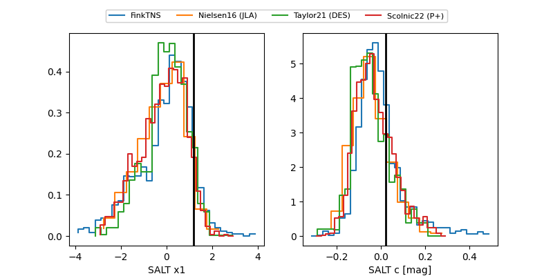

FINK: ZTF25abnebvm
Lasair: ZTF25abnebvm
ALeRCE: ZTF25abnebvm
TNS: 2025wng
YSE: 2025wng
ZTF25abnebvm (ztf,fink)
2025wng (tns,yse)
equatorial (ra, dec) = (351.1831,+8.55062)
galactic (l, b) = (89.4085,-48.59579)

last ztfg=20.29, ztfr=19.89
10 ztfg, 7 ztfr detections